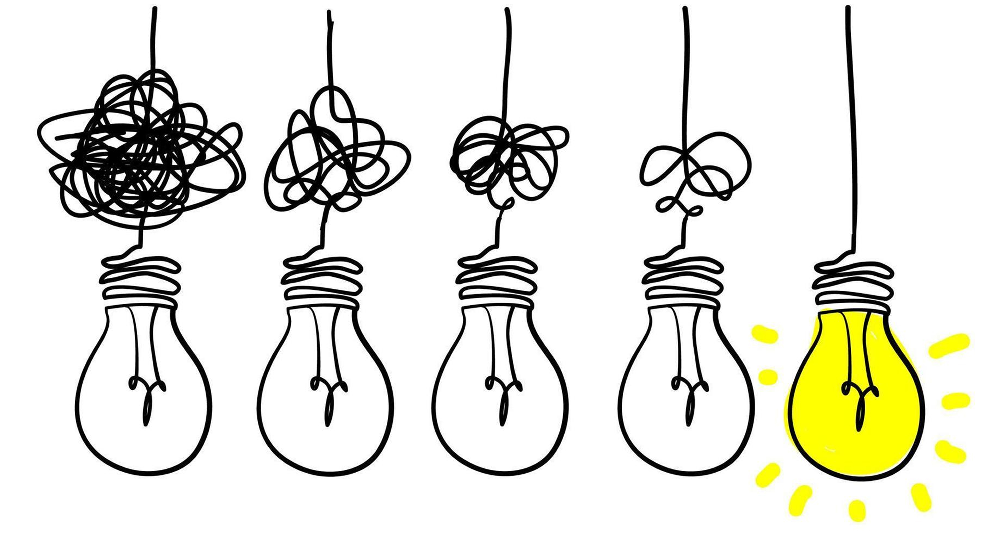
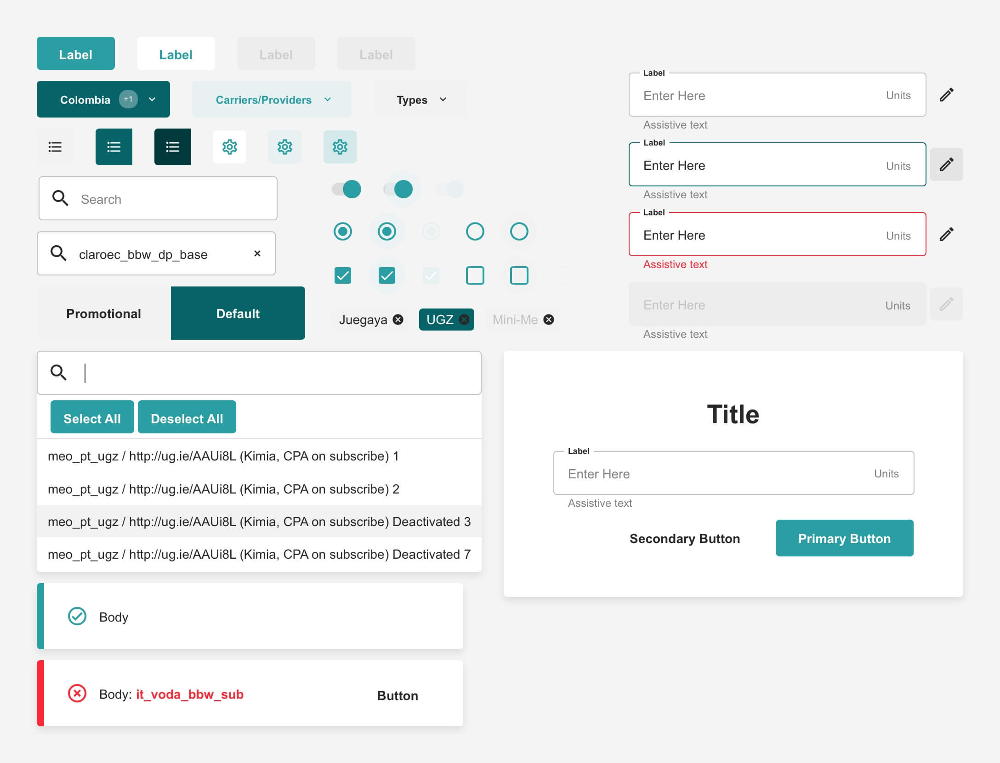

POG: Building Structure and Identity for Internal SaaS Tools
POG (short for “Pot of Gold”) is part of an internal suite of SaaS tools developed for airG’s Sales and Marketing teams. The name started as an inside joke — a lighthearted placeholder that stuck — but the product itself served a serious purpose: to bring clarity, efficiency, and consistency to internal operations.
POG was originally built from a legacy tool that had become overly complicated, visually inconsistent, and difficult to navigate. I partnered with a Product Manager to reimagine its structure, interface, and identity — designing both the branding and an entirely new design system to simplify workflows and unify the experience across the suite.
Responsibilities
- UI/UX Design
- Design System Creation
- Branding & Visual Identity
- Prototyping
- Cross-functional Collaboration
Tools
Sketch
Illustrator
Tailwind CSS
Angular
Challenge: Clarity Within Chaos
POG, while powerful in function, had grown into a tool that was just as intimidating as it was essential.
Our Users

Primary Users: Internal marketing and sales specialists. They knew their workflow inside out — from creating acquisitions to tracking campaign performance — but they struggled with the tool’s complexity and lack of structure.
New Users: Anyone onboarding into the system for the first time faced a steep learning curve. Without proper documentation or guided flows, new team members often relied on colleagues to “teach them the ropes,” making onboarding inconsistent and inefficient.
The Existing Problem
Over time, POG had evolved without a unified design direction. Every update solved a small problem — but collectively, it created a maze.
- Overly complicated UI — too many components, too little consistency.
- Lack of branding — Pot of Gold was just a placeholder name with no visual identity or personality.
- Developer overwhelm — custom UI elements were difficult to build, maintain, and reuse.
- No system thinking — each fix addressed an isolated issue, leaving no foundation for scalability.
System-Level Challenge
We weren’t just designing one tool — we were building the framework for every internal tool that would follow.
POG wasn’t a standalone product — it was part of a growing suite of internal tools, including Ad Management, Localization systems and more.
If we didn’t solve its structural and design inefficiencies at a system level, the chaos would multiply across the entire suite.
Process & Solution: Bringing Order to Chaos
Understanding the Legacy Tool
We began with a deep dive into the existing POG interface — and it didn’t take long to realize the problem.
The tool was cluttered, difficult to navigate, and lacked any sense of visual identity.
👉 Solution: Focus on simplification.

We stripped the UI down to its essentials, reorganized the workflow, and started mapping what a lightweight design system could look like for our internal needs.
Building a Tailored Design System
We didn’t need an all-encompassing design library with hundreds of components — we needed something lean, specific, and easy to maintain.
👉 Solution: I built a custom design system that included:
- Clear typography and hierarchy
- Simplified spacing and layout rules
- A consistent color palette
- A core set of reusable components (tables, forms, modals, buttons)

This not only sped up design and handoff but also reduced the number of errors during development. It helped us move fast without breaking consistency.
Branding Decisions
Then came the fun part — branding.
While “Pot of Gold” naturally suggested gold and yellow, those colors weren’t practical for UI accessibility. I wanted a metaphor that felt playful yet professional.
I drew inspiration from product suites like Google Workspace, Microsoft Office, and Adobe Creative Cloud — systems we use daily that maintain individuality within a shared identity.
I chose the green of the Canadian $20 bill, one of the most commonly used bills in Canada. The color represents growth, stability, and familiarity, making it a perfect metaphor for an internal tool that supports performance and progress.
👉 Solution: Built an agile brand identity — flexible enough to evolve, but strong enough to feel real.
Later, I experimented with logo concepts that visualized both the “pot” and “gold” ideas in a clean, geometric form.

Development Pivot
Halfway through, our development team hit a wall.
The number of custom UI components needed for POG was overwhelming — and progress began to slow.
👉 Solution: We pivoted to use the Angular component library and Tailwind CSS framework.
This change improved:
- Development speed — pre-built components meant faster implementation.
- Consistency — standardized styles reduced discrepancies.
- Maintainability — easier to update and scale in the future.
It was the perfect balance between custom design control and framework efficiency.


Scaling Beyond POG
POG was part of a broader internal SaaS suite that also included tools like Ad Management and Localization.
To keep the ecosystem cohesive, we needed a unifying visual language — while allowing each product to maintain its own identity.
👉 Solution: Inspired by Microsoft Office Suite, each tool was assigned its own theme color but remained connected through a shared design system, layout structure, and iconography.

This approach brought visual harmony and functional consistency across all products.
Ad Blaster - Asset Manager
POG
Prioritization & Agile Design
At the start of the redesign, our team often found ourselves buried in feature discussions — the tool’s complexity made it easy to lose sight of what truly mattered.
👉 Solution: We embraced agile design thinking.
To meet tight timelines, I created “quick UI passes” — simplified, functional mockups that gave developers something to build on early, while leaving room for iterative polish later.
This approach kept momentum high without sacrificing design intent, allowing the product to evolve in layers rather than in chaos.
POG 2.0
As the project matured, I began exploring ideas for POG 2.0 — building on the foundation we had established.
Continuing with Angular’s component library and Tailwind CSS, the goal was to make implementation even faster, cleaner, and more scalable, ensuring future iterations could adapt easily to new business and user needs.


Summary: What Worked
- Simplified and unified a chaotic legacy UI.
- Established a clear visual identity and internal brand.
- Created a lightweight design system tailored to real workflows.
- Collaborated closely with developers to merge design and framework efficiencies.
- Laid the foundation for a cohesive internal product suite at airG.
🌟 Result
The redesign of POG brought measurable improvements — not only in usability but also in team efficiency and morale.
- ✅ Simplified and clarified the UI for Sales and Marketing teams, reducing confusion and learning time.
- ⚙️ Reduced design-to-dev errors through a unified design system and consistent documentation.
- ⚡ Improved development speed by balancing custom design with Angular and Tailwind frameworks.
- 🧩 Established a scalable visual identity for the entire suite of internal tools — setting the foundation for future products.
Lessons Learned
This project reminded me that design systems are about people, not just pixels.
By simplifying workflows for developers, giving structure to designers, and creating clarity for end-users, we built something that felt stable, approachable, and scalable.
I also learned that even internal tools deserve thoughtful branding.
POG may have started as an inside joke — “Pot of Gold” — but giving POG a visual identity helped the team rally around it.
It proved that great design isn’t just functional — it can be cultural, too. ✨